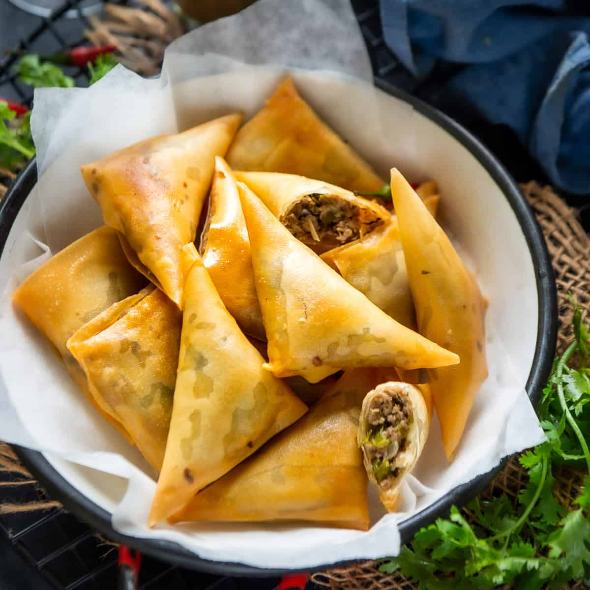

Samosa

Description
Samosa is a popular snack in many parts of the world, particularly in South Asia and the Middle East. It is a crispy pastry with a savory filling, typically made with vegetables, potatoes, and spices.
Ingredients
These are the ingredients used:
- Potatoes
- Peas
- Onions, garlic, and ginger
- Samosa pastry sheets
- Salt
- Oil
- Others
Steps
These are the instructions in cooking samosa:
- Prepare fillings.
- Roll out samosa dough and cut into triangles.
- Fold triangles into cone shape and fill with prepared filling.
- Seal edges of the samosa with water.
- Fry the samosas until they are golden brown.
Next recipe - Pizza